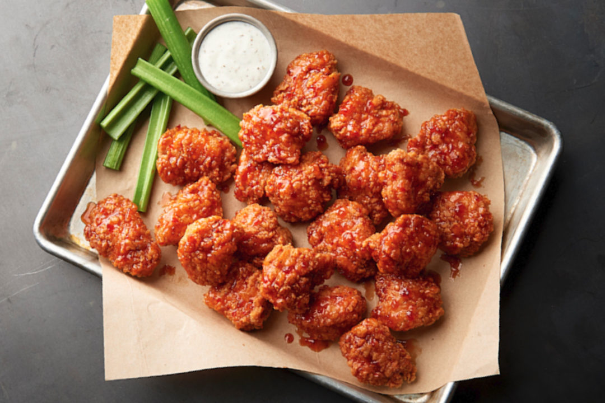

Boneless Buffalo Wings
A Buffalo wing is an unbreaded deep-fried chicken wing section (drumette or flat) that is then caoted or dipped in a sauce prior to serving.

Nutririon Info
- Prep:10 mins
- Cook:20 mins
- Additional:20 mins
- Total:50 mins
- Servings:3
- Yield:3 servings
Ingredients
- Oil for deep frying
- 1 cup unbleached all-purpose flour
- 2 teaspoons salt
- 1/2 teaspoon ground black pepper
- 1/2 teaspoon cayenne pepper
- 1/4 teaspoon paprika
- 1 egg
- 1 cup milk
- 3 skinless, bonless chicken breasts, cut into 1/2-inch strips
- 1/4 cup hot pepper sauce
- 1 tablespoon butter
Directions (steps)
- Heat oil in a deep-fryer or large saucepan to 375 degrees F (190 degrees C).
- Combine flour, salt, black pepper, cayenne pepper, garlic powder, and paprika in a large bowl.
Whisk together the egg and milk in a small bowl. Dip each piece of chicken in the egg mixture,
and then roll in the flour blend. Repeat so that each piece of chicken is double coated.
Refrigerate breaded chicken for 20 minutes.
- Fry chicken in the hot oil, in batches. Cook until the exterior is nicely browned,
and the juices run clear, 5 to 6 minutes a batch.
- Combine hot sauce and butter in a small bowl. Microwave sauce on High until melted, 20 to 30 seconds.
Pour sauce over the cooked chicken; mix to coat.